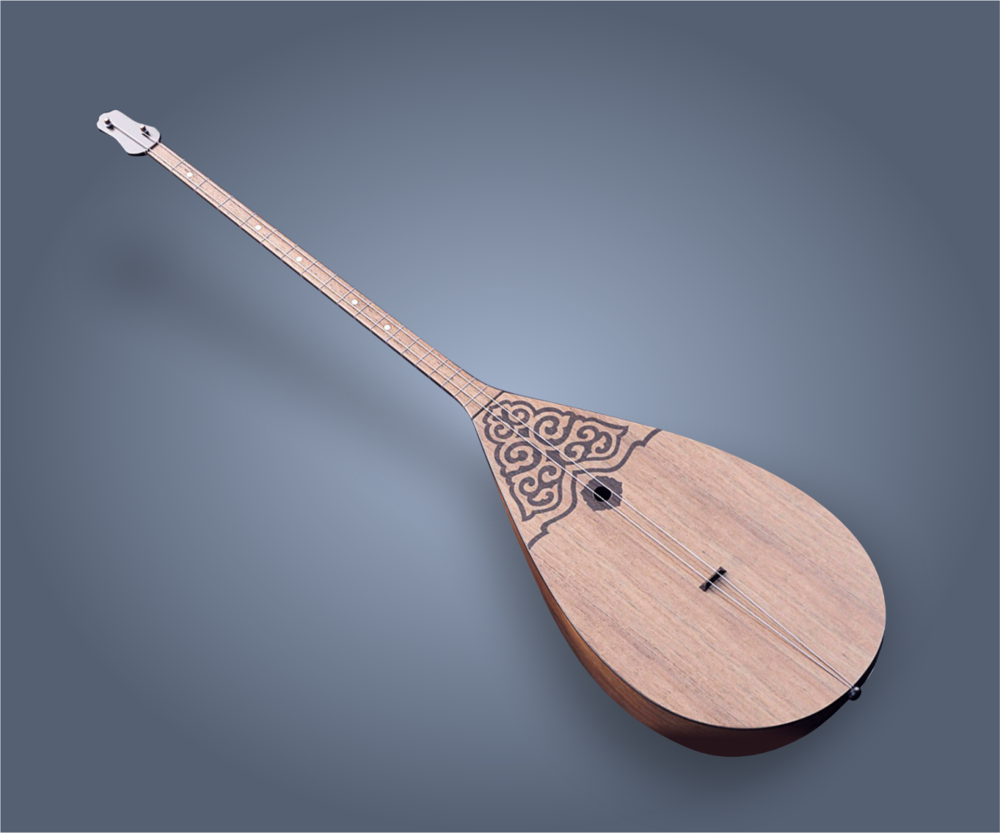
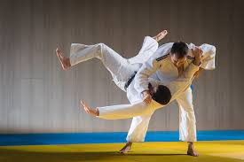

The hobbie list

I started a hobbie with playing a dombyra when I was 8 years old. My favorite kuys was Balbirayun , Kenes and Erkemai.

First interest to this sport started when I went to the 7th grade. I wanted to know some martial arts to defend myself.

I usually read when there is no light on the house. My favourite books are Harry Potter and some kazakh compositions.
Programming is the part of my life , I like to doing some web designs and making web development for realising my ideas to this world.